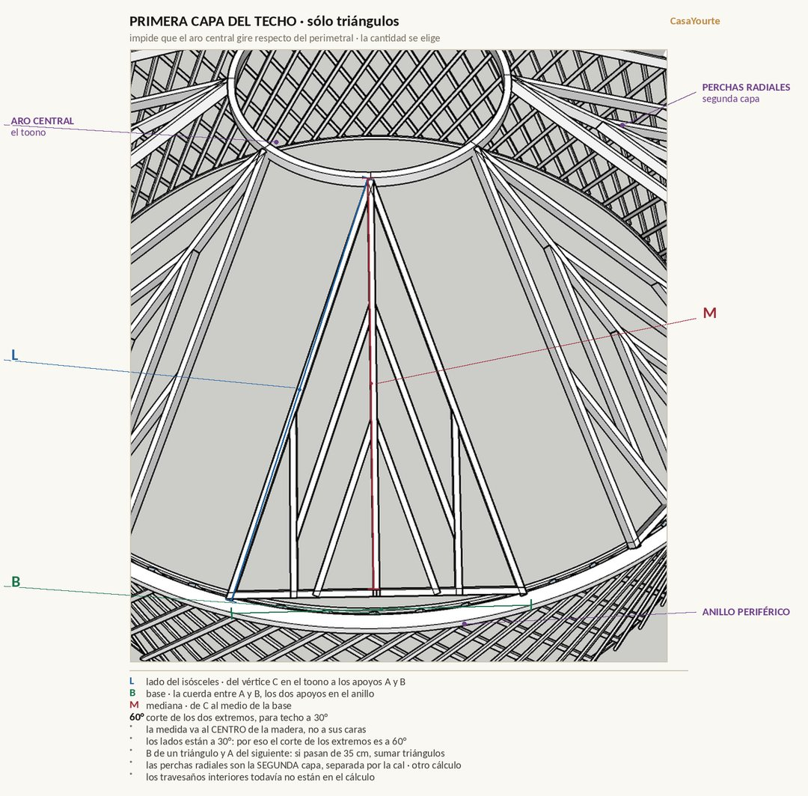

Cálculos
Un cálculo por cliente, guardado y accesible. Antes hacías una planilla para cada uno: esto es lo mismo, con las medidas ya verificadas contra el modelo.
Cargando…
—
Las medidas que se deciden. Todo en metros, salvo los ángulos.
Las letras de los resultados son las de estas dos láminas.

A aislación comprimida · E ancho del anillo · S y P los listones del borde · H altura de aislación · T del anillo al zócalo del trei.

L el lado del isósceles · B la base, que es la cuerda · M la mediana. Los tres se miden al centro de la madera.